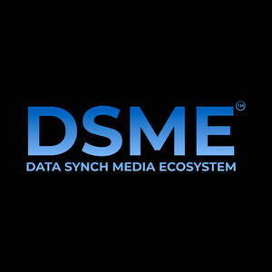

Trade Mark Journal No.2025/048 28 November 2025
UK00004294944 14 November 2025 (9,35,38,42)

- Class 9
- File sharing software; File synchronization software; Interactive data transfer apparatus; File management software; Data and file management and database software; File server software; File servers; Interactive computer software enabling exchange of information; Computer utility programs for file management; Port sharing printers; Platform software; Software platforms to allow users to collect money; Downloadable mobile applications for the transmission of data; Downloadable image files; Collaboration management software platforms; Computer software to enable the provision of information via communications networks; Downloadable mobile applications for the transmission of information; Real-Time Collaborative Editing [RTCE] platforms [software]; Computer software for the dissemination of positioning data; Downloadable mobile applications for the management of data; Computer software to enable the provision of information via the Internet.
- Class 35
- Providing business information, also via internet, the cable network or other forms of data transfer; Data file administration; Computer file management; Business file management; Providing a directory of third party web sites to facilitate business transactions; File management (Computerized -); Management (Computerized file -); Computerized file management; Computerised file management; Providing business directory information via a global computer network.
- Class 38
- Electronic file transfer; Telematic data transmission and file transfer; Providing frame relay connectivity services for data transfer; Providing access to a global computer network for the transfer and dissemination of information; Providing access to a video sharing portal; Data transfer services; Transmission of data, audio, video and multimedia files, including downloadable files and files streamed over a global computer network; Provision of access to Internet platforms for the purpose of exchanging digital photographs; Transfer of information and data via online services and the Internet; International data transfer; Providing multiple use access to global computer information networks for the transfer and dissemination of a wide range of information; Automatic transfer of digital data using telecommunications channels; Transferring and disseminating information and data via computer networks and the Internet; Wireless transfer of data via wireless application protocols; Time sharing services for communication apparatus; Transferring information and data via computer networks and the Internet; Wireless transfer of data via the Internet; Time sharing services for communications apparatus; Transfer of data by telecommunication; Transmission of data, audio, video and multimedia files; Transfer of data by radio; Provision of access to data or documents stored electronically in central files for remote consultation; Providing user access to platforms on the Internet; Transfer of information by radio; Providing access to information via data networks; Transfer of data by telecommunications; Transmission of digital files; Wireless transfer of data via digital mobile telephony; Providing user access to computer programs in data networks; Secured data, sound and image transmission services; Provision of access to data on communication networks; Providing access to data in computer networks; Transfer of data by telephone; Providing access to platforms on the Internet; Distribution of data or audio visual images via a global computer network or the internet; Transmission and distribution of data or audiovisual images via a global computer network or the Internet; Electronic exchange of data stored in databases accessible via telecommunication networks; Providing access to and leasing access time to computer networks.
- Class 42
- Document data transfer from one computer format to another; Time sharing services for data processing apparatus; Platform as a service [PaaS] featuring software platforms for transmission of images, audio-visual content, video content and messages; Hosting of computerized data, files, applications and information; Providing temporary use of non-downloadable software to enable sharing of multimedia content and comments among users; Hosting of transaction platforms on the internet; Interactive hosting services which allow the users to publish and share their own content and images online; Computer time sharing facilities (Provision of -); Providing user authentication services using single sign-on technology for online software applications; Cloud storage services for electronic files; Data storage via blockchain; Computer time sharing; Hosting online web facilities for others for sharing online content; Hosting of communication platforms on the internet; Time sharing services for computers; User authentication services using single sign-on technology for online software applications; Development of software for data and multimedia content conversion from and to different protocols; Providing temporary use of online non-downloadable software for accessing and using a cloud computing network; Design of software for data and multimedia content conversion from and to different protocols; Providing temporary use of on-line non-downloadable operating software for accessing and using a cloud computing network; Rental of operating software for accessing and using a cloud computing network; Electronic storage of digital video files; Design and development of operating software for accessing and using a cloud computing network; Design and development of computer software for reading, transmitting and organising data; Hosting on-line web facilities for others for managing and sharing on-line content; Electronic storage of audio files; Hosting of memory space on the Internet for storing digital photographs; Data conversion of computer program data or information [not physical conversion]; Development of hardware for data and multimedia content conversion from and to different protocols; Development of software for multimedia data storing and recalling.
Do It Creative Ltd